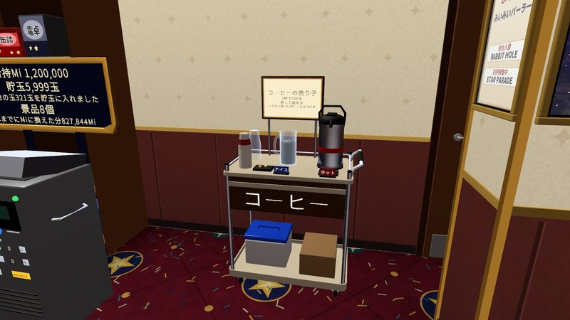
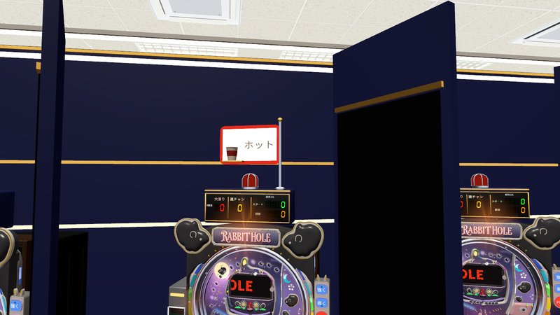
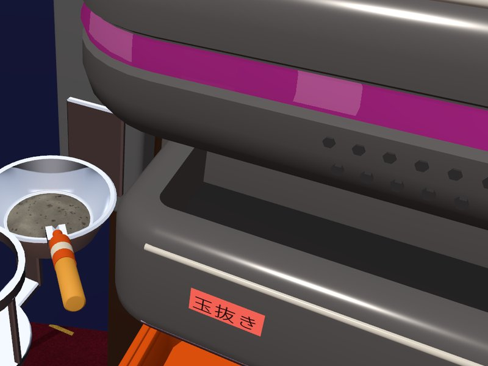
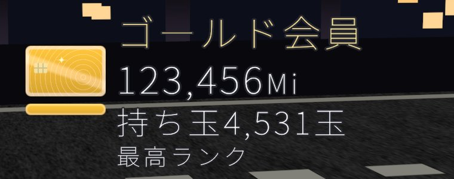

最終更新：2026-11-23（月）
店の遊び方
店のしくみのまとめ。台のスペックは各機種のページへ。
店内マップ

| 場所 | あるもの |
|---|---|
| 真ん中 | 台の島。表の列にRABBIT HOLE 6台、裏の列にSTAR PARADE 6台 |
| 入って左 | 景品カウンター、タバコとジュースの棚、計数機（カウンターの奥の端）、コーヒーのワゴン（西の壁ぎわ） |
| 入って右 | あなたの成績の画面、ランキング（東の壁）、奥に休憩コーナー（状況の板とテレビ、ごみ箱） |
| 通路の上 | 電光掲示板 |
| 店の外 | 謎の古物商「ほしの商会」（スポーン地点の左、駐車場の端の小屋） |
※スポーン地点は店の前の駐車場。
台の取り方
- 空き台の「打つ」（ハンドルの赤いボタン）・「玉を借りる」・「貯玉から出す」のどれかを押すと台を取れる。椅子には座らない
- 玉があれば自動で打つ。強さも自動（いちばん回る強さ）
- PUSHはドット表示の前に出るボタンを押す
- ドル箱の玉は打てば自動で上皿へ戻る
- 台から2.2m離れると打つのが止まる。玉が残っている時や、保留・回転・大当り・確変・時短の途中なら3分キープ
玉と貯玉
| 玉を借りる | 500Miで125玉（1玉4Mi） |
|---|---|
| 貯玉から出す | 125玉ずつ |
| 上皿 | 250玉まで。あふれると下皿へ |
| 下皿 | 500玉まで。いっぱいに近いと自動でドル箱へ |
| ドル箱 | 1,000玉まで。いっぱいになると積まれる（20箱まで） |
※計数せずに帰っても、次に来た時に台の玉は貯玉に入る。
計数・景品
- 計数機の「計数」で台の玉を数えて貯玉に入れる。ドル箱が計数機の上で傾いて玉が流れ込む
- 「景品に換える」で貯玉を景品にする。250玉の景品（紺のケース）と25玉の景品（赤のケース）の数を「－」「＋」で選ぶ。「全部」は換えられるだけ
- 換えなかった玉は貯玉に残る。タバコとジュースにも使える


※ケースの色は会員ランクで変わる。ホワイト会員は紺と赤。

謎の古物商（ほしの商会）

店の外、スポーン地点の左の小屋。なぜか店の景品を買い取ってくれる。小窓の「景品を出す」で、持っている景品が換Miされる。店とは関係ないらしい。
| 会員ランク | 250玉の景品 | 25玉の景品 | 1玉あたり |
|---|---|---|---|
| ホワイト | 1,000Mi | 100Mi | 4Mi |
| ブルー | 1,050Mi | 105Mi | 4.2Mi |
| グリーン | 1,100Mi | 110Mi | 4.4Mi |
| レッド | 1,175Mi | 118Mi | 4.7Mi |
| ゴールド | 1,250Mi | 125Mi | 5Mi |
※ランクの値が付くのは勝った分だけ。借りた玉の分はどのランクでも1玉4Miで数える（会員ランク）。
金策
所持Miは初回5,000Mi。所持Mi・貯玉・景品は次に来た時も残る。
| 方法 | もらえるもの | メモ |
|---|---|---|
| コーヒーの売り子 | 3杯で貯玉250玉 | 次の仕事まで20秒 |
| ごみ拾い | 空き缶も吸い殻も1つ10玉（貯玉） | 出玉アップ1分つき |
| 今日の用事 | 貯玉50〜125玉（週の用事は375〜625玉） | 毎日3つ・毎週1つ |
コーヒーの売り子

- コーヒーのワゴンの立て札で「売り子を始める」。トレーが手に載る（VRは左手、デスクトップは画面の下）
- 台の上に注文の札が立つ。赤い札がホット、青い札がアイス
- ワゴンのポットでホット、ピッチャーでアイスをトレーに入れる（3杯まで）
- 札を押して渡す。3杯渡すと貯玉に250玉
- 次の仕事まで20秒休み




ごみ拾い・差し入れ
- 空き缶と吸い殻は休憩コーナーのごみ箱の穴の上で離すと捨てられる。だれの物でも、空き缶も吸い殻も1つ10玉が貯玉に入り、出玉アップが1分つく
- 床のごみは25〜50秒ごとに台のまわりに出る（6つまで）
- ほかの人が遊んでいる台のドリンクホルダーか灰皿にジュースかタバコを出すと差し入れ。あげた人ともらった人の両方に出玉アップが1分つく


今日の用事

毎日3つ、毎週1つ、次の中から出る。
- 台を100回まわす
- 大当りを1回引く
- 計数機で玉を数える
- 玉を景品に換える
- 謎の古物商に景品を持っていく
- コーヒーを1杯運ぶ
- 空き缶を3つ捨てる
- タバコを1本吸う
タバコ・ジュース
貯玉で換えて台で使うと出玉アップがつく。スティックチーズ「ほしぞらチーズ」もタバコと同じ扱い。
| タバコ | ほしぞらチーズ | ジュース | |
|---|---|---|---|
| 値段 | 貯玉70玉で1箱20本 | 貯玉70玉で1袋20本 | 貯玉300玉で1ケース12本 |
| 出す所 | 台の灰皿を押すと1本 | 灰皿の手前のドリンクホルダーを押すと1本 | |
| 使う | 持って使うと火がつく | 持って使うと包みをむく | 持って使うと開く |
| 口へ運ぶ | 吸う。10口ほどで吸い口の近くまで燃える | かじる。15口ほどで食べ終わる | 飲む。8口で空 |
| 出玉アップ | 火がついている間 | 食べている間 | 開けて中身がある間 |
| 持ったまま | 吸わずに4分で燃えきる | 食べずに4分で片づく | 開けると4分で空になる |
換え方と銘柄
- タバコは景品カウンターのショーケースの上の棚。銘柄の列を押すとその銘柄を1箱。赤い「タバコに換える」は最後に換えた銘柄
- ほしぞらチーズは、タバコの棚とジュースの段の間の箱。ホワイト会員から換えられる
- ジュースは同じカウンターのジュースの段。見本の缶を押すとその種類を1ケース。段の手前にケースが4秒出る
- 貯玉が足りないと「貯玉が足りません」。手元の本数は銘柄ごとに次に来た時も残る
換えられる銘柄は会員ランクで増える。まだの品も棚に並び、「ブルー会員から」のような札が付いている。押すと「AURUMはゴールド会員から」のように出る。手元にあるジュースはランクに関係なく出せる。
| 会員ランク | タバコ | ジュース |
|---|---|---|
| ホワイト | MOONRISE・CORAL | オレンジ・おちゃ |
| ブルー | MINT LEAF | コーラ |
| グリーン | COMET | サイダー |
| レッド | SCARLET | コーヒー |
| ゴールド | AURUM | ミルクティー |

出し方
- 灰皿を押すと手元から1本出て、灰皿のくぼみに置かれる。灰皿に置けるのは1本まで
- ドリンクホルダーを押すと手元から1本出て立つ。ホルダーに缶が立っている間は出ない
- 出るのは最後に換えた銘柄から。ジュースはその種類が無くなると、残っているほかの種類が出る
- 灰皿の上に残りの本数が3.5秒出る。手元が0本なら「タバコはカウンターで」「ジュースはカウンターで」
- 店の中に同時に出せるのはタバコ16本、缶16本まで
使い方
| VR | デスクトップ | |
|---|---|---|
| タバコを吸う | 吸い口を口から5.5cm以内に当てる | 持って使うと口へ運ぶ |
| 灰 | 火の先の外に灰が伸び、1.6cmで落ちる。VRは使うと落とせる | |
| ジュースを飲む | ふたを口から8cm以内に当てて傾ける。満タンは25°、空に近いほど深く70°まで | 持って使うと口の右の端へ下から運ぶ（1口1秒） |
| チーズを食べる | タバコと同じ持ち方と運び方。口へ運ぶとかじって短くなる | |


置いた時と消えるまで
| 状態 | 消えるまで |
|---|---|
| 火のついたタバコを灰皿に置く | 90秒で火が消え、吸い殻は25秒で消える |
| 火をつけずに灰皿に置く | 2分 |
| タバコを床などに落とす | 90秒で火が消え、落としてから5分で消える |
| チーズを置いたまま | 90秒 |
| 開けた缶 | 飲まなくても4分で空になる |
| 空き缶をホルダーに置く | 20秒（ホルダーを押すと片づけて次の1本） |
| 空き缶を床などに置く | 5分 |
| 開けていない缶を置く | ホルダーで10分、ほかの所で3分。出した人の手元へ戻る |
効き目
持っている時も、灰皿やホルダーに置いている時も、アタッカー1カウントの賞球が+1になる（出玉アップ）。上の銘柄ほど、吸い終わり・飲み終わりのあとも出玉アップが残る。
| 銘柄のランク | 終わったあとに残る長さ |
|---|---|
| ホワイト（ほしぞらチーズも） | 0秒 |
| ブルー | 15秒 |
| グリーン | 30秒 |
| レッド | 45秒 |
| ゴールド | 60秒 |
オカルトにも関係する（オカルト）。
- ①タバコに火をつけて60秒は×1.08。チーズの包みをむいても①になる
- ⑤この台のドリンクホルダーに缶が立っている間は×1.08。自分の缶でも、置いてもらった缶でもよい
差し入れ
- ほかの人が遊んでいる台のドリンクホルダーか灰皿に、ジュースかタバコを出すと差し入れになる。チーズも同じ
- あげた人ともらった人の両方に出玉アップが1分（続けると5分まで）
- あげた人の灰皿の上に「差し入れ」、もらった人の灰皿の上に「〇〇さんから ジュースの差し入れ」と出る
- 効き目は、あげた人は20秒に1回、もらった人は10秒に1回まで
ごみの捨て方
- 空き缶と吸い殻は、休憩コーナーのごみ箱の穴の上で離す。穴の真ん中から横26cm、穴の35cm下から1m上までなら入る。ふたの上に載った物も捨てたことになる
- だれの物でも、自分の物でも1つ10玉が貯玉に入り、出玉アップが1分（続けると5分まで）
- 続けてもらう時は6秒あける。中身のある缶、開けていない缶、火のついたタバコは玉なし
- 床のごみは25〜50秒ごとに台のまわりに出る（6つまで。ごみ拾い）
小ネタ
- チーズの箱の手前の札「ほかの人のタバコをチーズに見せる」を押すとオン・オフ。オンの間は、ほかの人のタバコと吸い殻がチーズの形になり、火・煙・灰が見えない。自分の画面だけ
- チーズは火・煙・灰・ライターの音がない。むく時は「ぴりっ」、かじる時は「モグッ」
- タバコは吸うと火が明るくなり、離すと少しして煙をはく。1口で4〜5mm短くなる
- 缶は飲み口から中身の面が見え、飲むと下がる。中身の色は種類の色
- 持っている物はほかの人に取られない。置いた物は取れる

出玉アップ・オカルト
出玉アップ
アタッカー1カウントの賞球が+1。
| かかる時 | 長さ |
|---|---|
| 開けたジュースを持っている・置いている | その間 |
| 火のついたタバコを持っている・置いている | その間 |
| ごみを1つ捨てる | 1分（続けると5分まで） |
| 差し入れをする・もらう | 1分（続けると5分まで） |
オカルト
通常時の自分の台だけ、当たり確率が少し上がる。合わせて1.3倍まで。演出は出ない。
| 番号 | 条件 | 当たりやすさ |
|---|---|---|
| ① | タバコに火をつけて60秒 | ×1.08 |
| ② | キープした台に20秒以上たって戻ったあとの保留5個 | ×1.10 |
| ③ | 同じ列の隣の台が大当りに入って60秒 | ×1.08 |
| ④ | 玉を借りて30秒 | ×1.05 |
| ⑤ | この台に缶を置いている（自分の缶でも、置いてもらった缶でも） | ×1.08 |
人数
インスタンスの人数が多いほど玉がヘソに入りやすい（最大+15%）。
※かかっているバフは画面の左下、所持Miの下に出る（例：出玉UP 3:10 ①④当たり×1.13 人数で回り+9%）。
会員ランク
これまでの最高の所持Miで上がる。下がらない。
| ランク | 最高の所持Mi | 1玉の値 | 玉の色 | カードの絵柄 |
|---|---|---|---|---|
| ホワイト | 0 | 4Mi | 銀 | 細い斜線 |
| ブルー | 50,000Mi | 4.2Mi | 青銀 | 波 |
| グリーン | 150,000Mi | 4.4Mi | 緑銀 | 点 |
| レッド | 400,000Mi | 4.7Mi | 赤銀 | 太い帯 |
| ゴールド | 1,000,000Mi | 5Mi | 金 | 波紋と星 |
- 1玉の値は謎の古物商が景品を買い取る時の値。勝った分だけに付き、借りた玉の分は4Miで数える
- 景品のケースの地の色と、タバコ・ジュースの銘柄もランクで変わる（銘柄の表）
- 画面の表示に「ブルーまであと12,300Mi」のように次のランクまでの残りが出る


成績・ランキング・表示
| あなたの成績 | 回した回数・大当り・最高連荘・一撃・投資・回収・収支。今日の用事と8秒ごとに切りかわる |
|---|---|
| ランキング | 今月の収支・一撃・最高連荘と、所持Mi・これまでの一撃・最高連荘の6ページ。今月の分は月ごとに区切る |
| 電光掲示板 | だれかが大当りに入ると「〇〇さんが7番台のRABBIT HOLEで大当り」のように流れる |
| 状況の板とテレビ | 休憩コーナー。12台の大当り・連チャン・スタート・状態と、遊んでいる台を順に映すカメラ |
※一撃は、1回の連チャンでアタッカーから出た玉の最高。


画面の表示

会員カードとランク・所持Mi・貯玉・台の玉が出る。デスクトップとスマホは画面の左下、VRは左の手首を見ると出る。成績の画面の下の札で出す・隠すを切りかえる。
会員カードとランク・所持Mi・持ち玉は、アバターの頭の横にも小さく出て、ほかの人から見える。